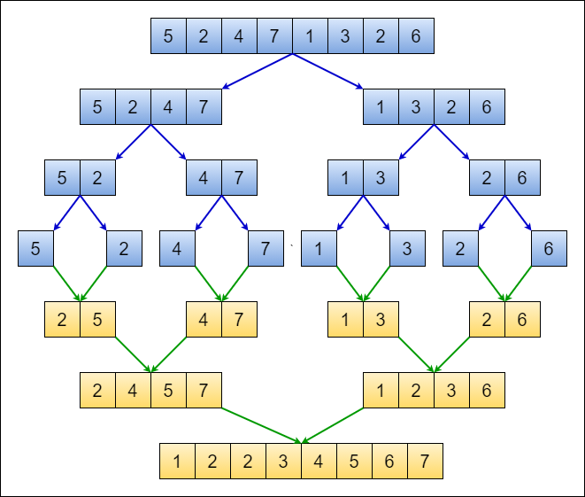
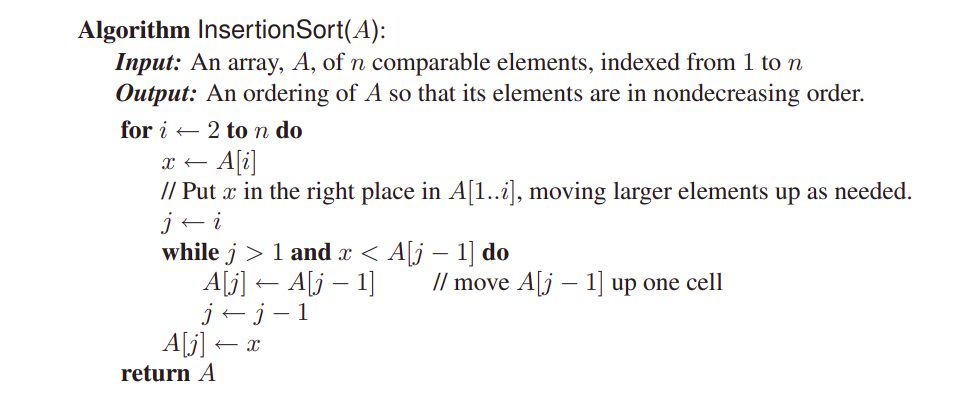

Design and Analysis of Algorithms
Asymptotic Notations...
Small Oh (Little-\(o\))
\(o\)-notation For a given Function \(g(n)\), we denote by \(o(g(n))\) the set of functions \(o(g(n)) = \{f(n)|\mbox{for any positive constant } c, \mbox{ there exists a constant } n_0 \mbox{ such that } 0\leq f(n) < cg(n) \mbox{ for all } n\geq n_0\}\).
This indicates a loose bound: \(f(n) = o(g(n))\) means \(f(n)\) grows strictly slower than \(g(n)\).
Example: \(2n=o(n^2)\) but \(2n^2\neq o(n^2)\).
Small Omega (Little-\(\omega\))
\(\omega\)-notation For a given function \(g(n)\), we denote by \(\omega(g(n))\) the set of functions \(\omega(g(n)) = \{f(n)| \mbox{ for any positive constant } c, \mbox{ there exists a constant } n_0 \mbox{ such that } 0\leq cg(n) < f(n) \mbox{ for all } n\geq n_0\}\).
This indicates a loose bound: \(f(n)=\omega(g(n))\) means \(f(n)\) grows strictly faster than \(g(n)\).
Example: \(\frac{n^2}{2} = \omega(n)\) but \(\frac{n^2}{2}\neq\omega(n^2)\).
Time Complexity of an Algorithm
Worst-Case Complexity: The worst case complexity of an algorithm is the function defined by the maximum number of steps taken on any instance of size \(n\).
Best-Case Complexity: The best case complexity of an algorithm is the function defined by the minimum number of steps taken on any instance of size \(n\).
Average-Case Complexity: The average case complexity of an algorithm is the function defined by an average number of steps taken on any instance of size \(n\).
Recurrence for Divide and Conquer
A recurrence for the running time of a divide-and-conquer algorithm falls out from the three steps of the basic paradigm. Suppose \(\mathbf{T(n)}\) be the running time on a problem of size \(n\).
Suppose that our division of the problem yields \(\mathbf{a}\) subproblems, each of which is \(\mathbf{1/b}\) the size of the original.
- It takes time \(\mathbf{T(n/b)}\) to solve one subproblem of size \(\mathbf{n/b}\), and so it takes time \(\mathbf{aT(n/b)}\) to solve \(\mathbf{a}\) of them.
If we take \(\mathbf{D(n)}\) time to divide the problem into subproblems, and \(\mathbf{C(n)}\) time to combine the solutions to the subproblems into the solution to the original problem, we get the recurrence: \[T(n) = \begin{cases} \Theta(1) & \mbox{ if } n\leq c \\ aT(n/b) + D(n) + C(n) & \mbox{ otherwise } \end{cases}\]
Analysis of merge sort
Analysis of merge sort
0.5


0.5 
Analysis of merge sort
We reason as follows to set up the recurrence for \(T(n)\):
Divide: The divide step just computes the middle of the subarray, which takes constant time. Thus, \(D(n)=\Theta(1)\).
Conquer: We recursively solve two subproblems, each of size \(n/2\), which contributes \(2T(n/2)\) to the running time.
Combine: MERGE procedure on an \(n\)-element subarray takes time \(\Theta(n)\), and so \(C(n)=\Theta(n)\).
Thus, we get the following recurrence relation of merge sort: \[T(n) = \begin{cases} \Theta(1) & \mbox{ if } n=1, \\ 2T(n/2) + \Theta(n) & \mbox{ if } n>1, \end{cases}\]
Analysis of merge sort
We can rewrite the recurrence as follows: \[T(n) = \begin{cases} c & \mbox{ if } n=1, \\ 2T(n/2) + cn & \mbox{ if } n>1, \end{cases}\] where the constant \(c\) represents the time required to solve problems of size \(1\) as well as the time per array element of the divide and combine step.
We can solve this recurrence using a recursion tree.
Analysis of merge sort

- The total number of levels of the recursion tree is \(\log_2{n}+1\), where \(n\) is the number of leaves, corresponding to the input size.
Analysis of merge sort
The number of levels of the recursion tree is \(\log_2{n}+1\) where \(n\) is the number of leaves.
We can prove this by using induction on the number of leaf nodes.
Base Case: When \(n=1\), the number of levels is \(\log_2{1}+1 = 1\) which is true.
Inductive Hypothesis: Assume that the number of levels of a recursion tree with \(2^n\) leaves is \(\log_2(2^n)+1 = n+1\).
Inductive Step: Because we are assuming that the input size is a power of \(2\), the next input size to consider is \(2^{n+1}\). A tree with \(l=2^{n+1}\) leaves has one more level than a tree with \(2^n\) leaves, and so the total number of levels is \((n+1)+1 = \log_2{2^{n+1}}+1\).
Following the above result, \(T(n) = cn\log_2{n}+cn\). Ignoring the low order term and the constant \(c\) gives us \(T(n) = \Theta(n\log{n})\).
Proof of correctness
Insertion Sort
Correctness of Insertion Sort

image
Correctness of Insertion Sort
Proof Sketch:
Maintain a loop invariant.
- At the start of the \(i^{th}\) iteration, the first \(i\) elements of the array are sorted.
Initialization: The loop invariant holds before the first iteration.
- At the start of the first iteration, the first element of the array is sorted.
Maintenance: If it is true before \(i^{th}\) iteration, it will be true before \((i+1)^{th}\) iteration.
- by construction, the objective of \(i^{th}\) iteration is to put the \(i^{th}\) element at the right position of the sorted array.
Termination: It is useful to know that the loop invariant is true at the end of the last iteration.
- At the start of the \(n^{th}\) iteration, \(n^{th}\) element is placed at the right position. So , all \(n\) elements are sorted.
Merge Sort
Correctness of Merge Sort
Loop Invariant: (in class)
Initialization: (in class)
Maintenance: (in class)
Termination: (in class)